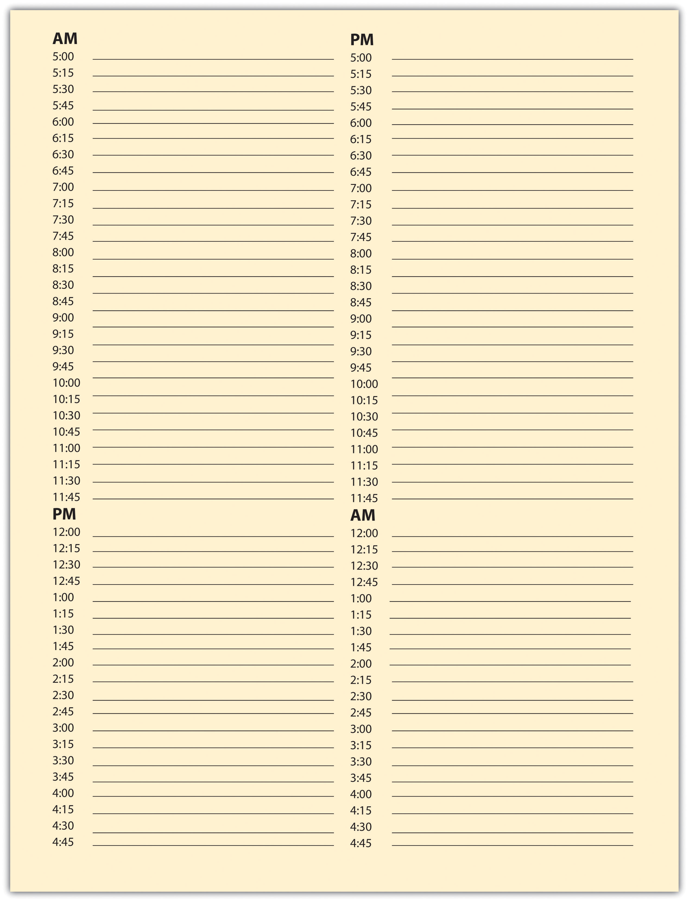
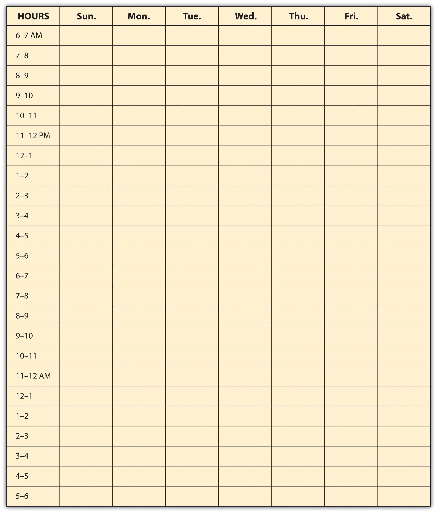
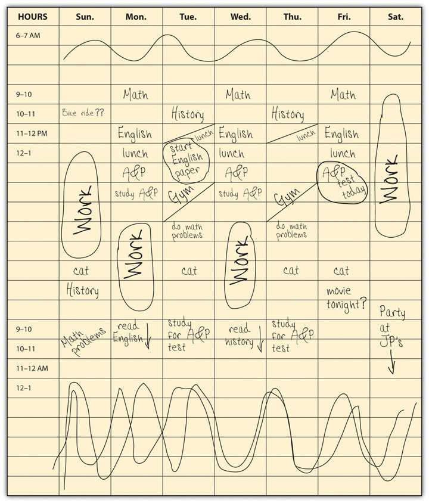
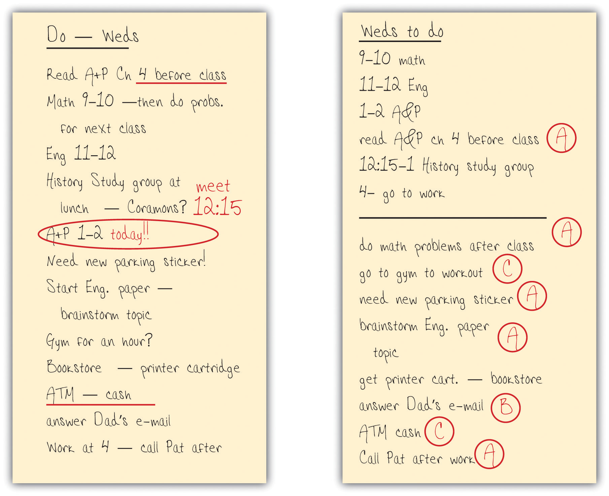

Assess your present knowledge and attitudes.
| Yes | Unsure | No | |
|---|---|---|---|
| 1. I have clear, realistic, attainable goals for the short and long term, including for my educational success. | |||
| 2. I have a good sense of priorities that helps ensure I always get the important things done, including my studies, while balancing my time among school, work, and social life. | |||
| 3. I have a positive attitude toward being successful in college. | |||
| 4. I know how to stay focused and motivated so I can reach my goals. | |||
| 5. When setbacks occur, I work to solve the problems effectively and then move on. | |||
| 6. I have a good space for studying and use my space to avoid distractions. | |||
| 7. I do not attempt to multitask when studying. | |||
| 8. I schedule my study periods at times when I am at my best. | |||
| 9. I use a weekly or daily planner to schedule study periods and other tasks in advance and to manage my time well. | |||
| 10. I am successful at not putting off my studying and other important activities or being distracted by other things. |
Think about how you answered the questions above. Be honest with yourself. On a scale of 1 to 10, how would you rate how well you stay focused on your goals and use your time?
| Need to improve | Very successful | |||||||||||||||||
|---|---|---|---|---|---|---|---|---|---|---|---|---|---|---|---|---|---|---|
| 1 | 2 | 3 | 4 | 5 | 6 | 7 | 8 | 9 | 10 | |||||||||
In the following list, circle the three most important areas in which you think you need to improve:
Are there other areas in which you can improve your time management skills so that you can study effectively in the time you have, while still managing other aspects of your life? Write down other things you feel you need to work on.
__________________________________________________________________
__________________________________________________________________
__________________________________________________________________
__________________________________________________________________
Here’s what we’ll work on in this chapter:
Since you’re reading this now, chances are very good you’re already in college or about to start. That means you’ve already set at least one goal for yourself—to get a college education—and that you’ve been motivated to come this far. You should feel good about that, because lots of people don’t make it this far. You’re off to a great first step!
But did you know that in many colleges in the United States, almost half of first-year college students will not make it to graduation? This varies widely among different colleges. Ask your instructor if he or she knows the graduation rate at your college, or you research this topic on your own. Knowing this can be important, because peer pressure (whether to succeed or to be lax and possibly drop out later) can be an important factor in your success.
If you want to be among the students who do succeed, it’s important to accept that college is not easy for most students. But we’re not trying to scare or depress you! The evidence shows that the huge majority of those who really want to finish college can do so successfully, if they stay motivated and learn how to succeed. That’s what this book is all about. But it may take some effort. Succeeding in college involves paying attention to your studies in ways you may not have had to in your former life.
The two most common reasons why students drop out are financial difficulties and falling behind in studying. While no one is guaranteed to easily find the money needed for college, there are many ways you can cut costs and make it easier to get through. Chapter 11 "Taking Control of Your Finances" has lots of tips for how to make it financially.
This chapter looks at the other big issue: how to make sure that you succeed in your courses. The first step is to be committed to your education. You’ve been motivated to start college—now you need to keep that motivation going as you target specific goals for success in your classes. Much of this has to do with attitude. Success also requires managing your time effectively.
In fact, time management skills can make the difference between those who graduate from college and those who drop out. Time management is actually all about managing yourself: knowing what you want, deciding how to get what you want, and then efficiently and effectively getting it. That applies to fun things, too. In fact, you may want to think of the goal of this chapter as not just managing your time for studying but ensuring that even as you do well in your studies, you’re still enjoying your life while in college!
Some people are goal oriented and seem to easily make decisions that lead to achieving their goalsA result or achievement toward which one directs one’s efforts., while others seem just to “go with the flow” and accept what life gives them. While the latter may sound pleasantly relaxed, moving through life without goals may not lead anywhere at all. The fact that you’re in college now shows you already have the major goal to complete your college program.
A goal is a result we intend to reach mostly through our own actions. Things we do may move us closer to or farther away from that result. Studying moves us closer to success in a difficult course, while sleeping through the final examination may completely prevent reaching that goal. That’s fairly obvious in an extreme case, yet still a lot of college students don’t reach their goal of graduating. The problem may be a lack of commitment to the goal, but often students have conflicting goals. One way to prevent problems is to think about all your goals and prioritiesSomething that is more important than other things or given special attention. and to learn ways to manage your time, your studies, and your social life to best reach your goals. Consider these four students:
To help his widowed mother, Juan went to work full time after high school but now, a few years later, he’s dissatisfied with the kinds of jobs he has been able to get and has begun taking computer programming courses in the evening. He’s often tired after work, however, and his mother would like him to spend more time at home. Sometimes he cuts class to stay home and spend time with her.
In her senior year of college, Becky has just been elected president of her sorority and is excited about planning a major community service project. She knows she should be spending more time on her senior thesis, but she feels her community project may gain her contacts that can help her find a better job after graduation. Besides, the sorority project is a lot more fun, and she’s enjoying the esteem of her position. Even if she doesn’t do well on her thesis, she’s sure she’ll pass.
After an easy time in high school, James is surprised his college classes are so hard. He’s got enough time to study for his first-year courses, but he also has a lot of friends and fun things to do. Sometimes he’s surprised to look up from his computer to see it’s midnight already, and he hasn’t started reading that chapter yet. Where does the time go? When he’s stressed, however, he can’t study well, so he tells himself he’ll get up early and read the chapter before class, and then he turns back to his computer to see who’s online.
Sachito was successful in cutting back her hours at work to give her more time for her engineering classes, but it’s difficult for her to get much studying done at home. Her husband has been wonderful about taking care of their young daughter, but he can’t do everything, and lately he’s been hinting more about asking her sister to babysit so that the two of them can go out in the evening the way they used to. Lately, when she’s had to study on a weekend, he leaves with his friends, and Sachito ends up spending the day with her daughter—and not getting much studying done.
What do these very different students have in common? Each has goals that conflict in one or more ways. Each needs to develop strategies to meet their other goals without threatening their academic success. And all of them have time management issues to work through: three because they feel they don’t have enough time to do everything they want or need to do and one because even though he has enough time, he needs to learn how to manage it more effectively. For all four of them, motivation and attitude will be important as they develop strategies to achieve their goals.
It all begins with setting goals and thinking about priorities.
As you think about your own goals, think about more than just being a student. You’re also a person with individual needs and desires, hopes and dreams, plans and schemes. Your long-term goals likely include graduation and a career but may also involve social relationships with others, a romantic relationship, family, hobbies or other activities, where and how you live, and so on. While you are a student you may not be actively pursuing all your goals with the same fervor, but they remain goals and are still important in your life.
Goals also vary in terms of time. Short-term goals focus on today and the next few days and perhaps weeks. Midterm goals involve plans for this school year and the time you plan to remain in college. Long-term goals may begin with graduating college and everything you want to happen thereafter. Often your long-term goals (e.g., the kind of career you want) guide your midterm goals (getting the right education for that career), and your short-term goals (such as doing well on an exam) become steps for reaching those larger goals. Thinking about your goals in this way helps you realize how even the little things you do every day can keep you moving toward your most important long-term goals.
Write out your goals in Activity 1. You should literally write them down, because the act of finding the best words to describe your goals helps you think more clearly about them. Follow these guidelines:
Write your goals in the following blanks. Be sure to consider all areas of your life—consider everything important that you want to do between this moment and old age. (While you might aim for three to eight goals in each section, remember that everyone is unique, and you may be just as passionate about just one or two goals or more than eight.)
Short-term goals (today, this week, and this month):
__________________________________________________________________
__________________________________________________________________
__________________________________________________________________
__________________________________________________________________
__________________________________________________________________
__________________________________________________________________
__________________________________________________________________
__________________________________________________________________
Midterm goals (this year and while in college):
__________________________________________________________________
__________________________________________________________________
__________________________________________________________________
__________________________________________________________________
__________________________________________________________________
__________________________________________________________________
__________________________________________________________________
__________________________________________________________________
Long-term goals (from college on):
__________________________________________________________________
__________________________________________________________________
__________________________________________________________________
__________________________________________________________________
__________________________________________________________________
__________________________________________________________________
__________________________________________________________________
__________________________________________________________________
Thinking about your goals gets you started, but it’s also important to think about priorities. We often use the word “priorities” to refer to how important something is to us. We might think, This is a really important goal, and that is less important. Try this experiment: go back to the goals you wrote in Activity 1 and see if you can rank each goal as a 1 (top priority), 2 (middle priority), or 3 (lowest priority).
It sounds easy, but do you actually feel comfortable doing that? Maybe you gave a priority 1 to passing your courses and a priority 3 to playing your guitar. So what does that mean—that you never play guitar again, or at least not while in college? Whenever you have an hour free between class and work, you have to study because that’s the higher priority? What about all your other goals—do you have to ignore everything that’s not a priority 1? And what happens when you have to choose among different goals that are both number 1 priorities?
In reality, priorities don’t work quite that way. It doesn’t make a lot of sense to try to rank goals as always more or less important. The question of priority is really a question of what is more important at a specific time. It is important to do well in your classes, but it’s also important to have a social life and enjoy your time off from studying. You shouldn’t have to choose between the two—except at any given time. Priorities always involve time: what is most important to do right now. As we’ll see later, time management is mostly a way to juggle priorities so you can meet all your goals.
When you manage your time well, you don’t have to ignore some goals completely in order to meet other goals. In other words, you don’t have to give up your life when you register for college—but you may need to work on managing your life more effectively.
But time management works only when you’re committed to your goals. Attitude and motivation are very important. If you haven’t yet developed an attitude for success, all the time management skills in the world won’t keep you focused and motivated to succeed.
What’s your attitude right now—what started running through your mind as you saw the “An Attitude for Success” heading? Were you groaning to yourself, thinking, “No, not the attitude thing again!” Or, at the other extreme, maybe you were thinking, “This is great! Now I’m about to learn everything I need to get through college without a problem!” Those are two attitude extremes, one negative and skeptical, the other positive and hopeful. Most students are somewhere in between—but everyone has an attitude of one sort or another.
Everything people do and how they do it starts with attitude. One student gets up with the alarm clock and cheerfully prepares for the day, planning to study for a couple hours between classes, go jogging later, and see a friend at dinner. Another student oversleeps after partying too late last night, decides to skip his first class, somehow gets through later classes fueled by fast food and energy drinks while dreading tomorrow’s exam, and immediately accepts a friend’s suggestion to go out tonight instead of studying. Both students could have identical situations, classes, finances, and academic preparation. There could be just one significant difference—but it’s the one that matters.
Here are some characteristics associated with a positive attitude:
And here are some characteristics associated with a negative attitude:
We started this chapter talking about goals, because people’s goals and priorities have a huge effect on their attitude. Someone who really wants to succeed in college is better motivated and can develop a more positive attitude to succeed. But what if you are committed to succeeding in college but still feel kind of doubtful or worried or even down on yourself—what can you do then? Can people really change their attitude? Aren’t people just “naturally” positive or negative or whatever?
While attitude is influenced by one’s personality, upbringing, and past experiences, there is no “attitude gene” that makes you one way or another. It’s not as simple as taking a pill, but attitude can be changed. If you’re committed to your goals, you can learn to adjust your attitude. The following are some things you can start doing.
We all have conversations with ourselves. I might do badly on a test, and I start thinking things like, “I’m just not smart enough” or “That teacher is so hard no one could pass that test.” The problem when we talk to ourselves this way is that we listen—and we start believing what we’re hearing. Think about what you’ve been saying to yourself since your first day at college. Have you been negative or making excuses, maybe because you’re afraid of not succeeding? You are smart enough or you wouldn’t be here. Even if you did poorly on a test, you can turn that around into a more positive attitude by taking responsibility. “OK, I goofed off too much when I should have been studying. I learned my lesson—now it’s time to buckle down and study for the next test. I’m going to ace this one!” Hear yourself saying that enough and guess what—you soon find out you can succeed even in your hardest classes.
We all know negative and positive people. Sometimes it’s fun to hang out with someone with a negative attitude, especially if their sarcasm is funny. And if we’ve just failed a test, we might enjoy being with someone else who also blames the instructor or “the system” for whatever goes wrong. As they say, misery loves company. But often being with negative people is one of the surest ways to stay negative yourself. You not only hear your own self-talk making excuses and blaming others and putting yourself down, but you hear other people saying it, too. After a while you’re convinced it’s true. You’ve developed a negative attitude that sets you up for failure.
College offers a great opportunity to make new friends. Friendships and other social relationships are important to all humans—and maybe to college students most of all, because of the stresses of college and the changes you’re likely experiencing. Later chapters in this book have some tips for making new friends and getting actively involved in campus life, if you’re not already there. Most important, try to choose friends with a positive attitude. It’s simply more fun to be with people who are upbeat and enjoying life, people whom you respect—and who, like you, are committed to their studies and are motivated. A positive attitude can really be contagious.
While it’s true that most people are more comfortable when their situation is not always changing, many kinds of change are good and should be welcomed. College is a big change from high school or working. Accepting that reality helps you be more positive about the differences. Sure, you have to study more, and the classes are harder. You may be working more and have less time for your personal life. But dwelling on those differences only reinforces a negative attitude. Look instead at the positive changes: the exciting and interesting people you’re meeting, the education you’re getting that will lead to a bright future, and the mental challenges and stimulation you’re feeling every day.
The first step may be simply to see yourself succeeding in your new life. Visualize yourself as a student taking control, enjoying classes, studying effectively, getting good grades. This book will help you do that in many ways. It all begins with the right attitude.
One of the most common fears of college students is a fear of failure—of not being able to make the grade. We all know that life is not all roses and that we’re not going to succeed at everything we try. Everyone experiences some sort of failure at some time—and everyone has fears. The question is what you do about it.
Again, think about your goals. You’ve enrolled in college for good reasons, and you’ve already shown your commitment by coming this far. If you still have any fear of failure, turn it around and use it in a positive way. If you’re afraid you may not do well on an upcoming exam, don’t mope around—sit down and schedule times to start studying well ahead of time. It’s mostly a matter of attitude adjustment.
Okay, you’ve got a positive attitude. But you’ve got a lot of reading for classes to do tonight, a test tomorrow, and a paper due the next day. Maybe you’re a little bored with one of your reading assignments. Maybe you’d rather play a computer game. Uh oh—now what? Attitude can change at almost any moment. One minute you’re enthusiastically starting a class project, and then maybe a friend drops by and suddenly all you want to do is close the books and relax a while, hang out with friends.
One of the characteristics of successful people is accepting that life is full of interruptions and change—and planning for it. Staying focused does not mean you become a boring person who does nothing but go to class and study all the time. You just need to make a plan.
Planning ahead is the single best way to stay focused and motivated to reach your goals. Don’t wait until the night before an exam. If you know you have a major exam in five days, start by reviewing the material and deciding how many hours of study you need. Then schedule those hours spread out over the next few days—at times when you are most alert and least likely to be distracted. Allow time for other activities, too, to reward yourself for successful studying. Then when the exam comes, you’re relaxed, you know the material, you’re in a good mood and confident, and you do well.
Planning is mostly a matter of managing your time well, as we’ll see later. Here are some other tips for staying focused and motivated:
Making friends with people with positive attitudes not only helps you maintain a positive attitude yourself, but it gets you started networking with other students in ways that will help you succeed.
Did you study alone or with friends in high school? Because college classes are typically much more challenging, many college students discover they do better, and find it much more enjoyable, if they study with other students taking same course. This might mean organizing a study group or just getting together with a friend to review material before a test. It’s good to start thinking right away about networking with other students in your classes.
If you consider yourself an independent person and prefer studying and doing projects on your own rather than with others, think for a minute about how most people function in their careers and professions, what the business world is like. Most work today is done by teams or individuals working together in a collaborative way. Very few jobs involve a person always being and working alone. The more you learn to study and work with other students now, the more skills you are mastering for a successful career.
Studying with other students has immediate benefits. You can quiz each other to help ensure that everyone understands the course material; if you’re not clear about something, someone else can help teach it to you. You can read and respond to each other’s writing and other work. You can divide up the work in group projects. And through it all, you can often have more fun than if you were doing it on your own.
Studying together is also a great way to start networking—a topic we’ll discuss more in coming chapters. Networking has many potential benefits for your future. College students who feel they are part of a network on campus are more motivated and more successful in college.
Even when you have clear goals and are motivated and focused to achieve them, problems sometimes happen. Accept that they will happen, since inevitably they do for everyone. The difference between those who succeed by solving the problem and moving on and those who get frustrated and give up is partly attitude and partly experience—and knowing how to cope when a problem occurs.
Lots of different kinds of setbacks may happen while you’re in college—just as to everyone in life. Here are a few examples:
Some things happen that we cannot prevent—such as some kinds of illness, losing one’s job because of a business slowdown, or crises involving family members. But many other kinds of problems can be prevented or made less likely to occur. You can take steps to stay healthy, as you’ll learn in Chapter 10 "Taking Control of Your Health". You can take control of your finances and avoid most financial problems common among college students, as you’ll learn in Chapter 11 "Taking Control of Your Finances". You can learn how to build successful social relationships and get along better with your instructors, with other students, and in personal relationships. You can learn time management techniques to ensure you use your time effectively for studying. Most of the chapters in this book also provide study tips and guidelines to help you do well in your classes with effective reading, note-taking, test-taking, and writing skills for classes. Preventing the problems that typically keep college students from succeeding is much of what this book is all about.
Not all problems can be avoided. Illness or a financial problem can significantly set one back—especially when you’re on a tight schedule and budget. Other problems, such as a social or relationship issue or an academic problem in a certain class, may be more complex and not easily prevented. What then?
First, work to resolve the immediate problem:
After you’ve solved a problem, be sure to avoid it again in the future:
Which of the following goal statements is written in a way that shows the person has carefully considered what he or she wants to achieve?
List ways in which a negative attitude can prevent students from being successful in college.
__________________________________________________________________
__________________________________________________________________
__________________________________________________________________
__________________________________________________________________
Think about your friends in college or other students you have observed in one of your classes. Choose one who usually seems positive and upbeat and one who sometimes or frequently shows a negative attitude about college. Visualize both their faces—side by side—as if you are talking to both of them. Now imagine yourself sitting down to study with one of them for a final exam. Describe how you would imagine that study session going.
__________________________________________________________________
__________________________________________________________________
__________________________________________________________________
Look back at the four students described at the beginning of the chapter. Each of them is experiencing some sort of problem that could interrupt their progress toward their goals. Think about each student and write down a solution for each problem that you would try to work out, if you were that person.
For Juan:
__________________________________________________________________
__________________________________________________________________
For Becky:
__________________________________________________________________
__________________________________________________________________
For James:
__________________________________________________________________
__________________________________________________________________
For Sachito:
__________________________________________________________________
__________________________________________________________________
List a few things you can do if you’re having trouble getting motivated to sit down to study.
__________________________________________________________________
__________________________________________________________________
__________________________________________________________________
__________________________________________________________________
Now that you’ve worked up an attitude for success and are feeling motivated, it’s time to get organized. You need to organize both your space and your time.
Space is important for many reasons—some obvious, some less so. People’s moods, attitudes, and levels of work productivity change in different spaces. Learning to use space to your own advantage helps get you off to a good start in your studies. Here are a few of the ways space matters:
Begin by analyzing your needs, preferences, and past problems with places for studying. Where do you usually study? What are the best things about that place for studying? What distractions are most likely to occur there?
The goal is to find, or create, the best place for studying, and then to use it regularly so that studying there becomes a good habit.
MultitaskingThe performing of multiple tasks at the same time, often involving technology and communications. The term originates in computer science, referring to how a computer’s CPU can be programmed to function. (Importantly, the human brain does not function the same as a computer!) is the term commonly used for being engaged in two or more different activities at the same time, usually referring to activities using devices such as cell phones, smartphones, computers, and so on. Many people claim to be able to do as many as four or five things simultaneously, such as writing an e-mail while responding to an instant message (IM) and reading a tweet, all while watching a video on their computer monitor or talking on the phone. Many people who have grown up with computers consider this kind of multitasking a normal way to get things done, including studying. Even people in business sometimes speak of multitasking as an essential component of today’s fast-paced world.
It is true that some things can be attended to while you’re doing something else, such as checking e-mail while you watch television news—but only when none of those things demands your full attention. You can concentrate 80 percent on the e-mail, for example, while 20 percent of your attention is listening for something on the news that catches your attention. Then you turn to the television for a minute, watch that segment, and go back to the e-mail. But you’re not actually watching the television at the same time you’re composing the e-mail—you’re rapidly going back and forth. In reality, the mind can focus only on one thing at any given moment. Even things that don’t require much thinking are severely impacted by multitasking, such as driving while talking on a cell phone or texting. An astonishing number of people end up in the emergency room from just trying to walk down the sidewalk while texting, so common is it now to walk into a pole or parked car while multitasking!
“Okay,” you might be thinking, “why should it matter if I write my paper first and then answer e-mails or do them back and forth at the same time?” It actually takes you longer to do two or more things at the same time than if you do them separately—at least with anything that you actually have to focus on, such as studying. That’s true because each time you go back to studying after looking away to a message or tweet, it takes time for your mind to shift gears to get back to where you were. Every time your attention shifts, add up some more “downtime”—and pretty soon it’s evident that multitasking is costing you a lot more time than you think. And that’s assuming that your mind does fully shift back to where you were every time, without losing your train of thought or forgetting an important detail. It doesn’t always.
The other problem with multitasking is the effect it can have on the attention span—and even on how the brain works. Scientists have shown that in people who constantly shift their attention from one thing to another in short bursts, the brain forms patterns that make it more difficult to keep sustained attention on any one thing. So when you really do need to concentrate for a while on one thing, such as when studying for a big test, it becomes more difficult to do even if you’re not multitasking at that time. It’s as if your mind makes a habit of wandering from one thing to another and then can’t stop.
So stay away from multitasking whenever you have something important to do, like studying. If it’s already a habit for you, don’t let it become worse. Manipulate your study space to prevent the temptations altogether. Turn your computer off—or shut down e-mail and messaging programs if you need the computer for studying. Turn your cell phone off—if you just tell yourself not to answer it but still glance at it each time to see who sent or left a message, you’re still losing your studying momentum and have to start over again. For those who are really addicted to technology (you know who you are!), go to the library and don’t take your laptop or cell phone.
In the later section in this chapter on scheduling your study periods, we recommend scheduling breaks as well, usually for a few minutes every hour. If you’re really hooked on checking for messages, plan to do that at scheduled times.
What about listening to music while studying? Some don’t consider that multitasking, and many students say they can listen to music without it affecting their studying. Studies are inconclusive about the positive or negative effects of music on people’s ability to concentrate, probably because so many different factors are involved. But there’s a huge difference between listening to your favorite CD and spontaneously singing along with some of the songs and enjoying soft background music that enhances your study space the same way as good lighting and pleasant décor. Some people can study better with low-volume instrumental music that relaxes them and does not intrude on their thinking, while others can concentrate only in silence. And some are so used to being immersed in music and the sounds of life that they find total silence more distracting—such people can often study well in places where people are moving around. The key thing is to be honest with yourself: if you’re actively listening to music while you’re studying, then you’re likely not studying as well as you could be. It will take you longer and lead to less successful results.
Sometimes going to the library or elsewhere is not practical for studying, and you have to find a way to cope in a shared space.
Part of the solution is time management. Agree with others on certain times that will be reserved for studying; agree to keep the place quiet, not to have guests visiting, and to prevent other distractions. These arrangements can be made with a roommate, spouse, and older children. If there are younger children in your household and you have child-care responsibility, it’s usually more complicated. You may have to schedule your studying during their nap time or find quiet activities for them to enjoy while you study. Try to spend some time with your kids before you study, so they don’t feel like you’re ignoring them. (More tips are offered later in this chapter.)
The key is to plan ahead. You don’t want to find yourself, the night before an exam, in a place that offers no space for studying.
Finally, accept that sometimes you’ll just have to say no. If your roommate or a friend often tries to engage you in conversation or suggests doing something else when you need to study, just say no. Learn to be firm but polite as you explain that you just really have to get your work done first. Students who live at home may also have to learn how to say no to parents or family members—just be sure to explain the importance of the studying you need to do! Remember, you can’t be everything to everyone all the time.
For each of the following statements, circle T for true or F for false:
| T | F | Your bed is usually a good place to study if you can keep the room quiet. |
| T | F | To study well, use the most drab, boring place you can find. |
| T | F | An empty classroom can be a good place to get some studying done if you happen to have an hour free between classes. |
| T | F | To maintain a clear focus while studying, limit the time you spend checking for e-mail and text messages to every ten minutes or so. Put your cell phone on vibrate mode and keep it in your pocket where you can more easily ignore it. |
| T | F | It’s OK to have the television or radio on while you study as long as you don’t give it your full attention. |
| T | F | The key to avoiding interruptions and distractions from family members or roommates is to plan ahead for when and where you’ll study. |
This is the most important part of this chapter. When you know what you want to do, why not just sit down and get it done? The millions of people who complain frequently about “not having enough time” would love it if it were that simple!
Time management isn’t actually difficult, but you do need to learn how to do it well.
People’s attitudes toward time vary widely. One person seems to be always rushing around but actually gets less done than another person who seems unconcerned about time and calmly goes about the day. Since there are so many different “time personalities,” it’s important to realize how you approach time. Start by trying to figure out how you spend your time during a typical week, using Activity 2.
See if you can account for a week’s worth of time. For each of the activity categories listed, make your best estimate of how many hours you spend in a week. (For categories that are about the same every day, just estimate for one day and multiply by seven for that line.)
| Category of activity | Number of hours per week |
|---|---|
| Sleeping | |
| Eating (including preparing food) | |
| Personal hygiene (i.e., bathing, etc.) | |
| Working (employment) | |
| Volunteer service or internship | |
| Chores, cleaning, errands, shopping, etc. | |
| Attending class | |
| Studying, reading, and researching (outside of class) | |
| Transportation to work or school | |
| Getting to classes (walking, biking, etc.) | |
| Organized group activities (clubs, church services, etc.) | |
| Time with friends (include television, video games, etc.) | |
| Attending events (movies, parties, etc.) | |
| Time alone (include television, video games, surfing the Web, etc.) | |
| Exercise or sports activities | |
| Reading for fun or other interests done alone | |
| Talking on phone, e-mail, Facebook, etc. | |
| Other—specify: ________________________ | |
| Other—specify: ________________________ |
Now use your calculator to total your estimated hours. Is your number larger or smaller than 168, the total number of hours in a week? If your estimate is higher, go back through your list and adjust numbers to be more realistic. But if your estimated hours total fewer than 168, don’t just go back and add more time in certain categories. Instead, ponder this question: Where does the time go? We’ll come back to this question.
Think about your time analysis in Activity 2. People who estimate too high often feel they don’t have enough time. They may have time anxiety and often feel frustrated. People at the other extreme, who often can’t account for how they use all their time, may have a more relaxed attitude. They may not actually have any more free time, but they may be wasting more time than they want to admit with less important things. Yet they still may complain about how much time they spend studying, as if there’s a shortage of time.
People also differ in how they respond to schedule changes. Some go with the flow and accept changes easily, while others function well only when following a planned schedule and may become upset if that schedule changes. If you do not react well to an unexpected disruption in your schedule, plan extra time for catching up if something throws you off. This is all part of understanding your time personality.
Another aspect of your time personality involves time of day. If you need to concentrate, such as when writing a class paper, are you more alert and focused in the morning, afternoon, or evening? Do you concentrate best when you look forward to a relaxing activity later on, or do you study better when you’ve finished all other activities? Do you function well if you get up early—or stay up late—to accomplish a task? How does that affect the rest of your day or the next day? Understanding this will help you better plan your study periods.
While you may not be able to change your “time personality,” you can learn to manage your time more successfully. The key is to be realistic. How accurate is the number of hours you wrote down in Activity 2? The best way to know how you spend your time is to record what you do all day in a time log, every day for a week, and then add that up. Make copies of the time log in Figure 2.4 "Daily Time Log" and carry it with you. Every so often, fill in what you have been doing. Do this for a week before adding up the times; then enter the total hours in the categories in Activity 2. You might be surprised that you spend a lot more time than you thought just hanging out with friends—or surfing the Web or playing around with Facebook or any of the many other things people do. You might find that you study well early in the morning even though you thought you are a night person, or vice versa. You might learn how long you can continue at a specific task before needing a break.
Figure 2.4 Daily Time Log
If you have work and family responsibilities, you may already know where many of your hours go. Although we all wish we had “more time,” the important thing is what we do with the time we have. Time management strategies can help us better use the time we do have by creating a schedule that works for our own time personality.
Time management for successful college studying involves these factors:
For every hour in the classroom, college students should spend, on average, about two hours on that class, counting reading, studying, writing papers, and so on. If you’re a full-time student with fifteen hours a week in class, then you need another thirty hours for rest of your academic work. That forty-five hours is about the same as a typical full-time job. If you work part time, time management skills are even more essential. These skills are still more important for part-time college students who work full time and commute or have a family. To succeed in college, virtually everyone has to develop effective strategies for dealing with time.
Look back at the number of hours you wrote in Activity 2 for a week of studying. Do you have two hours of study time for every hour in class? Many students begin college not knowing this much time is needed, so don’t be surprised if you underestimated this number of hours. Remember this is just an average amount of study time—you may need more or less for your own courses. To be safe, and to help ensure your success, add another five to ten hours a week for studying.
To reserve this study time, you may need to adjust how much time you spend in other activities. Activity 3 will help you figure out what your typical week should look like.
Plan for the ideal use of a week’s worth of time. Fill in your hours in this order:
Fixed life activities (sleeping, eating, hygiene, chores, transportation, etc.)
Now subtotal your hours so far and subtract that number from 168. How many hours are left? ____________ Then portion out the remaining hours for “discretionary activities” (things you don’t have to do for school, work, or a healthy life).
| Category of activity | Number of hours per week |
|---|---|
| Attending class | |
| Studying, reading, and researching (outside of class) | |
| Working (employment) | |
| Volunteer service or internship | |
| Sleeping | |
| Eating (including preparing food) | |
| Personal hygiene (i.e., bathing, etc.) | |
| Chores, cleaning, errands, shopping, etc. | |
| Transportation to work or school | |
| Getting to classes (walking, biking, etc.) | |
| Subtotal: | |
| Discretionary activities: | |
| Organized group activities (clubs, church services, etc.) | |
| Time with friends (include television, video games, etc.) | |
| Attending events (movies, parties, etc.) | |
| Time alone (include television, video games, surfing the Web, etc.) | |
| Exercise or sports activities | |
| Reading for fun or other interests done alone | |
| Talking on phone, e-mail, Facebook, etc. | |
| Other—specify: ________________________ | |
| Other—specify: ________________________ |
Note: If you find you have almost no time left for discretionary activities, you may be overestimating how much time you need for eating, errands, and the like. Use the time log in Figure 2.4 "Daily Time Log" to determine if you really have to spend that much time on those things.
Activity 3 shows most college students that they do actually have plenty of time for their studies without losing sleep or giving up their social life. But you may have less time for discretionary activities than in the past. Something, somewhere has to give. That’s part of time management—and why it’s important to keep your goals and priorities in mind. The other part is to learn how to use the hours you do have as effectively as possible, especially the study hours. For example, if you’re a typical college freshman who plans to study for three hours in an evening but then procrastinatesTo intentionally (often habitually) put something off until another day or time., gets caught up in a conversation, loses time to checking e-mail and text messages, and listens to loud music while reading a textbook, then maybe you actually spent four hours “studying” but got only two hours of actual work done. So you end up behind and feeling like you’re still studying way too much. The goal of time management is to actually get three hours of studying done in three hours and have time for your life as well.
Special note for students who work. You may have almost no discretionary time at all left in Activity 3 after all your “must-do” activities. If so, you may have overextended yourself—a situation that inevitably will lead to problems. You can’t sleep two hours less every night for the whole school year, for example, without becoming ill or unable to concentrate well on work and school. It is better to recognize this situation now rather than set yourself up for a very difficult term and possible failure. If you cannot cut the number of hours for work or other obligations, see your academic advisor right away. It is better to take fewer classes and succeed than to take more classes than you have time for and risk failure.
Following are some strategies you can begin using immediately to make the most of your time:
Procrastination is a way of thinking that lets one put off doing something that should be done now. This can happen to anyone at any time. It’s like a voice inside your head keeps coming up with these brilliant ideas for things to do right now other than studying: “I really ought to get this room cleaned up before I study” or “I can study anytime, but tonight’s the only chance I have to do X.” That voice is also very good at rationalizing: “I really don’t need to read that chapter now; I’ll have plenty of time tomorrow at lunch.…”
Procrastination is very powerful. Some people battle it daily, others only occasionally. Most college students procrastinate often, and about half say they need help avoiding procrastination. Procrastination can threaten one’s ability to do well on an assignment or test.
People procrastinate for different reasons. Some people are too relaxed in their priorities, seldom worry, and easily put off responsibilities. Others worry constantly, and that stress keeps them from focusing on the task at hand. Some procrastinate because they fear failure; others procrastinate because they fear success or are so perfectionistic that they don’t want to let themselves down. Some are dreamers. Many different factors are involved, and there are different styles of procrastinating.
Just as there are different causes, there are different possible solutions for procrastination. Different strategies work for different people. The time management strategies described earlier can help you avoid procrastination. Because this is a psychological issue, some additional psychological strategies can also help:
Calendar planners and to-do lists are effective ways to organize your time. Many types of academic planners are commercially available (check your college bookstore), or you can make your own. Some people like a page for each day, and some like a week at a time. Some use computer calendars and planners. Almost any system will work well if you use it consistently.
Some college students think they don’t need to actually write down their schedule and daily to-do lists. They’ve always kept it in their head before, so why write it down in a planner now? Some first-year students were talking about this one day in a study group, and one bragged that she had never had to write down her calendar because she never forgot dates. Another student reminded her how she’d forgotten a preregistration date and missed taking a course she really wanted because the class was full by the time she went online to register. “Well,” she said, “except for that time, I never forget anything!” Of course, none of us ever forgets anything—until we do.
Calendars and planners help you look ahead and write in important dates and deadlines so you don’t forget. But it’s just as important to use the planner to schedule your own time, not just deadlines. For example, you’ll learn later that the most effective way to study for an exam is to study in several short periods over several days. You can easily do this by choosing time slots in your weekly planner over several days that you will commit to studying for this test. You don’t need to fill every time slot, or to schedule every single thing that you do, but the more carefully and consistently you use your planner, the more successfully will you manage your time.
But a planner cannot contain every single thing that may occur in a day. We’d go crazy if we tried to schedule every telephone call, every e-mail, every bill to pay, every trip to the grocery store. For these items, we use a to-do list, which may be kept on a separate page in the planner.
Check the example of a weekly planner form in Figure 2.5 "Weekly Planner". (You can copy this page and use it to begin your schedule planning. By using this first, you will find out whether these time slots are big enough for you or whether you’d prefer a separate planner page for each day.) Fill in this planner form for next week. First write in all your class meeting times; your work or volunteer schedule; and your usual hours for sleep, family activities, and any other activities at fixed times. Don’t forget time needed for transportation, meals, and so on. Your first goal is to find all the blocks of “free time” that are left over.
Remember that this is an academic planner. Don’t try to schedule in everything in your life—this is to plan ahead to use your study time most effectively.
Next, check the syllabus for each of your courses and write important dates in the planner. If your planner has pages for the whole term, write in all exams and deadlines. Use red ink or a highlighter for these key dates. Write them in the hour slot for the class when the test occurs or when the paper is due, for example. (If you don’t yet have a planner large enough for the whole term, use Figure 2.5 "Weekly Planner" and write any deadlines for your second week in the margin to the right. You need to know what’s coming next week to help schedule how you’re studying this week.)
Figure 2.5 Weekly Planner
Remember that for every hour spent in class, plan an average of two hours studying outside of class. These are the time periods you now want to schedule in your planner. These times change from week to week, with one course requiring more time in one week because of a paper due at the end of the week and a different course requiring more the next week because of a major exam. Make sure you block out enough hours in the week to accomplish what you need to do. As you choose your study times, consider what times of day you are at your best and what times you prefer to use for social or other activities.
Don’t try to micromanage your schedule. Don’t try to estimate exactly how many minutes you’ll need two weeks from today to read a given chapter in a given textbook. Instead, just choose the blocks of time you will use for your studies. Don’t yet write in the exact study activity—just reserve the block. Next, look at the major deadlines for projects and exams that you wrote in earlier. Estimate how much time you may need for each and work backward on the schedule from the due date. For example,
You have a short paper due on Friday. You determine that you’ll spend ten hours total on it, from initial brainstorming and planning through to drafting and revising. Since you have other things also going on that week, you want to get an early start; you might choose to block an hour a week ahead on Saturday morning, to brainstorm your topic, and jot some preliminary notes. Monday evening is a good time to spend two hours on the next step or prewriting activities. Since you have a lot of time open Tuesday afternoon, you decide that’s the best time to reserve to write the first draft; you block out three or four hours. You make a note on the schedule to leave time open that afternoon to see your instructor during office hours in case you have any questions on the paper; if not, you’ll finish the draft or start revising. Thursday, you schedule a last block of time to revise and polish the final draft due tomorrow.
If you’re surprised by this amount of planning, you may be the kind of student who used to think, “The paper’s due Friday—I have enough time Thursday afternoon, so I’ll write it then.” What’s wrong with that? First, college work is more demanding than many first-year students realize, and the instructor expects higher-quality work than you can churn out quickly without revising. Second, if you are tired on Thursday because you didn’t sleep well Wednesday night, you may be much less productive than you hoped—and without a time buffer, you’re forced to turn in a paper that is not your best work.
Figure 2.6 "Example of a Student’s Weekly Planner Page with Class Times and Important Study Sessions" shows what one student’s schedule looks like for a week. This is intended only to show you one way to block out time—you’ll quickly find a way that works best for you.
Figure 2.6 Example of a Student’s Weekly Planner Page with Class Times and Important Study Sessions
Here are some more tips for successful schedule planning:
People use to-do lists in different ways, and you should find what works best for you. As with your planner, consistent use of your to-do list will make it an effective habit.
Some people prefer not to carry their planner everywhere but instead copy the key information for the day onto a to-do list. Using this approach, your daily to-do list starts out with your key scheduled activities and then adds other things you hope to do today.
Some people use their to-do list only for things not on their planner, such as short errands, phone calls or e-mail, and the like. This still includes important things—but they’re not scheduled out for specific times.
Although we call it a daily list, the to-do list can also include things you may not get to today but don’t want to forget about. Keeping these things on the list, even if they’re a low priority, helps ensure that eventually you’ll get to it.
Start every day with a fresh to-do list written in a special small notebook or on a clean page in your planner. Check your planner for key activities for the day and check yesterday’s list for items remaining.
Some items won’t require much time, but other activities such as assignments will. Include a time estimate for these so that later you can do them when you have enough free time. If you finish lunch and have twenty-five minutes left before your next class, what things on the list can you do now and check off?
Finally, use some system to prioritize things on your list. Some students use a 1, 2, 3 or A, B, C rating system for importance. Others simply highlight or circle items that are critical to get done today. Figure 2.7 "Examples of Two Different Students’ To-Do Lists" shows two different to-do lists—each very different but each effective for the student using it.
Figure 2.7 Examples of Two Different Students’ To-Do Lists
Use whatever format works best for you to prioritize or highlight the most important activities.
Here are some more tips for effectively using your daily to-do list:
If you’re both working and taking classes, you seldom have large blocks of free time. Avoid temptations to stay up very late studying, for losing sleep can lead to a downward spiral in performance at both work and school. Instead, try to follow these guidelines:
Living with family members often introduces additional time stresses. You may have family obligations that require careful time management. Use all the strategies described earlier, including family time in your daily plans the same as you would hours spent at work. Don’t assume that you’ll be “free” every hour you’re home, because family events or a family member’s need for your assistance may occur at unexpected times. Schedule your important academic work well ahead and in blocks of time you control. See also the earlier suggestions for controlling your space: you may need to use the library or another space to ensure you are not interrupted or distracted during important study times.
Students with their own families are likely to feel time pressures. After all, you can’t just tell your partner or kids that you’ll see them in a couple years when you’re not so busy with job and college! In addition to all the planning and study strategies discussed so far, you also need to manage your family relationships and time spent with family. While there’s no magical solution for making more hours in the day, even with this added time pressure there are ways to balance your life well:
Student athletes often face unique time pressures because of the amount of time required for training, practice, and competition. During some parts of the year, athletics may involve as many hours as a full-time job. The athletic schedule can be grueling, involving weekend travel and intensive blocks of time. You can be exhausted after workouts or competitions, affecting how well you can concentrate on studies thereafter. Students on athletic scholarships often feel their sport is their most important reason for being in college, and this priority can affect their attitudes toward studying. For all of these reasons, student athletes face special time management challenges. Here are some tips for succeeding in both your sport and academics:
What time(s) of day are you at your most alert?
_________________________
What time(s) of day are you at your least alert?
_________________________
What category of discretionary activity (not sleeping, working, studying, etc.) represents your largest use of time?
_________________________
Can you reduce the time you spend in that activity if you need more time for your coursework?
_________________________
For each of the following statements about time management, circle T for true or F for false:
| T | F | Think yourself into a positive mood before starting to study. |
| T | F | Always study just before going to sleep so that you’ll dream about the topic. |
| T | F | Break up larger projects into smaller parts and stages. |
| T | F | Get everything done on your to-do list before studying so that you’re not distracted. |
| T | F | When feeling stressed by a project, put it off until tomorrow. |
| T | F | Talk with your instructor or another student if you’re having difficulty. |
| T | F | Try to study at least three hours at a time before taking a break. |
| T | F | Reward yourself for successfully completing a task. |
| T | F | Avoid studying at times not written in on your weekly planner; these are all free times just for fun. |
| T | F | Whenever interrupted by a friend, use that opportunity to take a break for up to thirty minutes. |
| T | F | Turn off all electronic devices when reading an assignment except for your laptop if you use it to take notes. |
| T | F | Since people procrastinate when they’re distracted by other things that need doing, it’s best to delay studying until you’ve done everything else first. |
| T | F | Studying with a friend is a sure way to waste time and develop poor study habits. |
| T | F | Use a study journal to observe how you use your time and determine what things are keeping you from getting your work done. |
| T | F | There’s no reason to keep a weekly calendar if all your instructors have provided you with a syllabus that gives the dates for all assignments and tests. |
| T | F | Studying for a particular class is most effective immediately after that class meets. |
Without looking at your weekly or daily schedule, think about your typical week and the times you have free when not in class, working, studying, eating, socializing, and so on. List at least three “downtimes” when you don’t usually study that you can use for coursework when necessary.
_________________________________________
_________________________________________
_________________________________________
_________________________________________
Describe the characteristics of well-written goals.
__________________________________________________________________
__________________________________________________________________
List at least four or five things you can do to develop a positive attitude.
__________________________________________________________________
__________________________________________________________________
__________________________________________________________________
__________________________________________________________________
__________________________________________________________________
What have you personally found helps motivate you to sit down and start studying?
__________________________________________________________________
__________________________________________________________________
Describe the most important characteristics of an effective study space.
__________________________________________________________________
__________________________________________________________________
__________________________________________________________________
__________________________________________________________________
How can you prepare for unplanned interruptions while studying?
__________________________________________________________________
__________________________________________________________________
After you have analyzed how you typically spend time and have blocked out study periods for the week, you may still have difficulty using that study time well. List additional time management strategies that can help you make the most of the time that you do have.
__________________________________________________________________
__________________________________________________________________
__________________________________________________________________
__________________________________________________________________
__________________________________________________________________
__________________________________________________________________
If you find yourself procrastinating, what can you do to get back on track?
__________________________________________________________________
__________________________________________________________________
__________________________________________________________________
__________________________________________________________________
What can go wrong if you try to micromanage every minute of the day?
__________________________________________________________________
__________________________________________________________________
What should you do, instead?
__________________________________________________________________
__________________________________________________________________
Realizing that any action repeated consistently and frequently will soon become a habit, what should you do with your academic planner every day and every week to establish a strong habit that will help ensure your success in all your college courses to come?
__________________________________________________________________
__________________________________________________________________
__________________________________________________________________
__________________________________________________________________
Make seven copies of the “Study Journal” page following. Near the end of the day, every day for the next week, spend a few minutes reviewing your day and writing answers to those questions. At the end of the week, review what you have written and summarize what you observe about your study tendencies by answering these questions:
Did you usually get as much, more, or less schoolwork done as you had scheduled for the day?
________________________________________
If you got less done, was the problem due to scheduling more time than you actually had, or not making effective use of the scheduled blocks of time?
__________________________________________________________________
__________________________________________________________________
List the steps you will follow to make your scheduling process work better next week.
_______________________________________________________
__________________________________________________________________
__________________________________________________________________
What other things did you do repeatedly during the week when you should have been studying? ________________________________________________
__________________________________________________________________
__________________________________________________________________
What were the most common distractions (people or other interruptions) during the week when you were studying? ________________________________
__________________________________________________________________
__________________________________________________________________
List ways you can control your study space to avoid these activities and prevent these distractions next week. _____________________________________
__________________________________________________________________
__________________________________________________________________
Do you see a pattern in the activities you least enjoyed and had difficulty getting started on? ___________________________________________________
__________________________________________________________________
__________________________________________________________________
Review Chapter 2 "Staying Motivated, Organized, and On Track", Section 2.2 "Organizing Your Space" and Chapter 2 "Staying Motivated, Organized, and On Track", Section 2.3 "Organizing Your Time" for specific strategies to use to stay focused and motivated. Make a list here of five or more things you will do differently next week if studying becomes difficult or less enjoyable.
__________________________________________________________________
__________________________________________________________________
__________________________________________________________________
__________________________________________________________________
__________________________________________________________________
__________________________________________________________________
__________________________________________________________________
Study Journal for Date: ____________
My daily planner had scheduled ______ hours of academic time today (not counting time in class). It turned out that I actually spent about ______ hours on my studies.
At some times I was scheduled to study or do academic work, I was doing this instead:
__________________________________________________________________
__________________________________________________________________
The academic time I most enjoyed today was doing ___________________
__________________________________________________________________
I enjoyed this most because _____________________________________
__________________________________________________________________
The academic time I least most enjoyed today was doing _______________
__________________________________________________________________
I enjoyed this least because ____________________________________
__________________________________________________________________
I had the most difficulty getting started on this study activity:
__________________________________________________________________
Why?
__________________________________________________________________
I did my studying and other academic work in these places:
__________________________________________________________________
__________________________________________________________________
During the time I was studying, I was interrupted by these people:
__________________________________________________________________
__________________________________________________________________
Other interruptions included the following (phone calls, e-mail, etc.):
__________________________________________________________________
__________________________________________________________________
Goals
I have not yet set realistic, specific, and time-oriented goals for the following:
__________________________________________________________________
__________________________________________________________________
In the coming weeks and months, I will think about and clarify these goals:
__________________________________________________________________
__________________________________________________________________
Planning Ahead
Too often in the past, I have not started early enough on these kinds of school assignments and studying:
__________________________________________________________________
__________________________________________________________________
To ensure I successfully plan ahead to complete all work on time in the future, I will do the following:
__________________________________________________________________
__________________________________________________________________
Attitude
I have most difficulty maintaining a positive attitude at the following times:
__________________________________________________________________
__________________________________________________________________
I can do the following things to “adjust” my attitude at these times to help ensure my success:
__________________________________________________________________
__________________________________________________________________
Focus and Motivation
When I’m not feeling motivated to work on my studies, I often do these things instead:
__________________________________________________________________
__________________________________________________________________
I will try to use these strategies to keep motivated and focused on my studies in the future:
__________________________________________________________________
__________________________________________________________________
Study Space
I have the following problems with the places where I usually study now:
__________________________________________________________________
__________________________________________________________________
I will make the following changes in my study space (or I will try these new places) to help prevent distractions:
__________________________________________________________________
__________________________________________________________________
Time Management
I often feel I don’t have enough time for my college work for the following reasons:
__________________________________________________________________
__________________________________________________________________
I will start using these techniques to make sure I use my available time well:
__________________________________________________________________
__________________________________________________________________